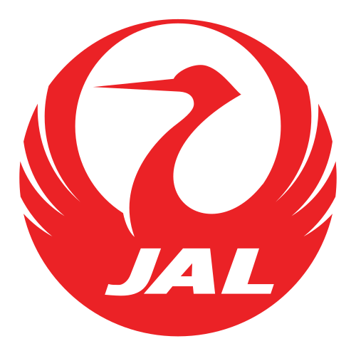

旅行費用の目安
香港は物価が高く、とくにホテルは狭い部屋でも料金が高めです。そのぶん食事で調整しやすく、茶餐廳や屋台なら1食1,000円前後から。MTRやトラム、スターフェリーも安いので、使い方しだいで出費を抑えられます。
・食事は茶餐廳のセットメニュー（ランチ）が割安
・スターフェリーとトラムは安い移動手段兼、観光アトラクション
両替・支払い
通貨は香港ドル（HKD）で、日本の空港や両替所でも調達できます。現地ではMTRやバス、コンビニ、一部の茶餐廳などでオクトパスカードが使え、レストランや店でもカードが広く通じます。一方、露店や小さな食堂は現金のみの店もあります。
ホテルやレストランなどカードが使える場所はカード払いする前提で、屋台・市場・交通機関など現金が必要になる分の目安です。足りなくなっても、なら現地ATMで気軽に引き出せて安心です。
海外でのカード利用リスクに備える
海外でクレジットカードを使うたびに不正利用のリスクは高まります。筆者自身も海外渡航後に2回不正利用を経験したことをきっかけに、現在は海外ではWiseカードをメインに使うようにしています。チャージした分しか使えないため万が一の際も被害が限定的で、旅好きの友人たちの間でも最近かなり普及してきています。
航空券の予約
日本〜香港は羽田・成田・関西などから日系・香港系の直行便が多数運航し、所要は約4〜5時間。週末の短い旅にも向く近さです。LCCのセールを狙えば費用を抑えられ、深夜発や早朝着の便を選ぶと、現地で使える時間を長く取れます。
航空券を比較・予約するなら、ほぼこれ一択！スカイスキャナーの公式サイトはこちら



・GW・お盆・年末年始、旧正月の時期は高騰しやすい
・直行便が多いので、早朝着・深夜発を選べば現地滞在を長くできる
・夏の台風シーズンは遅延・欠航に備えて予備日を
ホテルの選び方
香港は世界有数の宿代の高さで、客室が狭いことも珍しくありません。MTRの駅近を軸に、尖沙咀・旺角・中環・銅鑼灣あたりから選ぶと動きやすいです。治安は比較的よいものの、安さだけで選ぶと設備や清潔さに差が出る雑居ビル型の宿に当たりやすいため、口コミの確認を。
初めてなら尖沙咀か中環・上環が観光に便利。客室が狭い宿が多いので、スーツケースが広げにくい点は覚悟したい。雑居ビル内の安宿は設備や清潔さに差があるため、予約前に口コミを確認し、夜遅い到着の日は駅や大通りに近い宿を選ぶと安心。
航空券・ホテル・SIM・持ち物まで全部まとめてチェック。
30カ国以上を旅した管理人が実体験をもとに作った持ち物リストもあります。